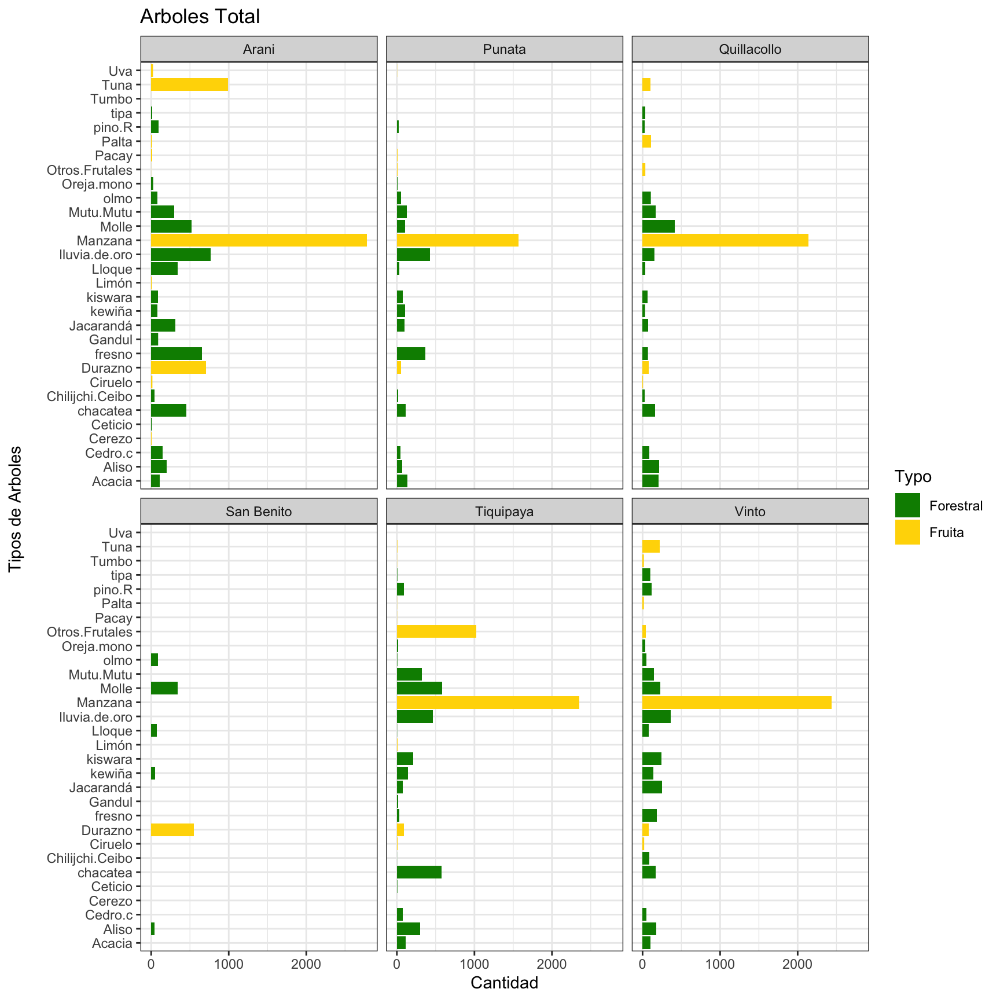

Resumen Proyecto Puente 2023
¡Bienvenido/a a nuestra página dedicada a los sistemas agroforestales!
Aquí encontrarás información valiosa y recursos sobre las acciones que estamos desarrollando en la implementación de este tipo de práctica que une la agricultura, la recuperación de la fertilidad del suelo y la creación de un microclima que incluso realiza un eficiente uso del agua a mediano plazo.
¿Qué es un Sistema Agroforestal Dinámico?
Es un enfoque de manejo de tierras que combina árboles, cultivos y/u otros componentes vegetales en un mismo sistema productivo. A través de interacciones positivas entre estos elementos, se promueve una mayor diversidad biológica, optimización de recursos y mejoras en la resiliencia del ecosistema. Estos sistemas permiten una mayor adaptación a cambios climáticos y contribuyen a la sostenibilidad agrícola al proporcionar múltiples beneficios, como la conservación del suelo, captura de carbono y seguridad alimentaria. Trabajar con sistemas agroforestales dinámicos ofrece diversas ventajas. Estos sistemas combinan árboles, cultivos y otros elementos, lo que resulta en una mayor diversidad de productos y servicios. Además de aumentar la producción, los sistemas agroforestales dinámicos mejoran la salud del suelo y reducen la erosión y contribuyen a la mitigación del cambio climático. Al fomentar la biodiversidad y el equilibrio ecológico, estos sistemas también fortalecen la resiliencia ante condiciones climáticas extremas y ofrecen una base sostenible para la producción agrícola a largo plazo.
Proyectos que implementamos: (Habría que actualizar lo que se tiene ahora con los informes anteriores quizás:
agrecolandes.org/sistemasagroforestales
Introduccion
- En el primer semestre, el proyecto avanzó en consolidar la Agroforestería Dinámica, gestionando parcelas con y sin riego. Hubo exitosas visitas de técnicos y representantes institucionales, demostrando la viabilidad de producir alimentos saludables y mejorar la fertilidad del suelo sin agroquímicos. Las actividades incluyeron manejo de parcelas, divulgación de experiencias y formación en agroforestería dinámica.
Objetivo
El objetivo es difundir, generar y consolidar experiencias en sistemas agroforestales dinámicos con y sin riego en 9 municipios del departamento de Cochabamba.
Ubicación y Duración
El proyecto abarca los municipios de Tiquipaya, Vinto, Quillacollo, Arani, Punata, San Benito, Sacaba, Colomi y Tiraque, con un 70% de la labor concentrada en el Parque Nacional Tunari Figure 1.
En este componente, se realizaron actividades como el seguimiento, acompañamiento y manejo de parcelas establecidas en gestiones anteriores. Se implementaron nuevas parcelas agroforestales que se convierten en espacios de aprendizaje tanto para las familias como para los técnicos que las visitan.
Seguimiento manejo de parcelas agroforestales
Una vez establecidas las parcelas agroforestales, el seguimiento y asesoramiento continuo son esenciales. Aunque es un sistema natural, se requieren nuevas técnicas para integrar árboles frutales y forestales, superando inquietudes de vecinos. En este proceso, destacan actividades como deshierbe, podas, aplicación de cal y caldos nutricionales, en sincronía con el calendario agrícola.
Durante el periodo de enero a junio de 2023, se realizó un seguimiento y acompañamiento a parcelas agroforestales en diferentes municipios. AGRECOL Andes brindó asistencia técnica a 75 parcelas, mientras que CETM asistió a 87 parcelas, alcanzando en conjunto un total del 65% de las parcelas manejadas.
Ubicacion de los Huertas
Posiciones Huertas Agroforestales AGRECOL (ahora solo Vinto y Tiquipaya por ahora)
Resumen de los parcelas agroforestales en Cochabamba
Typos de Arboles

Datos de Plantación en Tiquipaya

Cantidad de Abondamiento de durante el tiempo

Supf. En Ha / Nro. De Familias con parcelas agroforestales

Total Nro. De Plantas Frutales

Estado de los Huertas Agroforestales

Tiquipaya
Typos de Arboles

Datos de Plantación en Tiquipaya

Cantidad de Abondamiento

Vinto
Typos Arboles

Datos de Plantación en Vinto

Tamaño de parcela (m2) / Altitud msnm en Vinto

Arani
Typos de Arboles

Punata
Typos de Arboles

Quillacollo
Typos de Arboles

San Benito
Typos de Arboles

En estrecha colaboración con los gobiernos municipales y en respuesta a solicitudes de familias productoras, se han establecido nuevas parcelas de Agroforestería Dinámica (SAFD), tanto bajo riego como a secano. Durante el primer semestre de 2023, se ha observado un aumento en las solicitudes para la implementación de parcelas a secano, evidenciando el entusiasmo y participación en el desarrollo de la Agroforestería Dinámica en esa modalidad.
2. Formación en Agroforestería Dinámica
- Intercambio de Experiencias en SAF-D: Se realizan 3 intercambios en el semestre, con 80 participantes en total. Los visitantes exploran parcelas avanzadas para comprender la producción. Resultados positivos y aprendizaje visual.
- Formación de Peritos Agricultores y Técnicos: Se actualiza un programa de formación práctica para peritos en sistemas agroforestales dinámicos.
- Formación de Asistentes: No se llevó a cabo debido a cambios en la titulación estudiantil.
- Talleres de Construcción de Riego: La demanda crece por su versatilidad y bajo costo. Se construyeron 3 sistemas de riego, beneficiando a 86 familias. Dos de AGRECOL Andes y uno de CETM.
3. Difusión del Enfoque de Agroforestería Dinámica
- Intercambio de Experiencias en SAF-D con Productores Externos: Se realizan 3 intercambios con instituciones de otras áreas interesadas en aprender y replicar el manejo de parcelas de Agroforestería Dinámica (SAF-D). En estos intercambios, 60 productores participaron, incluyendo 33 hombres y 27 mujeres.
- Asesoría en SAF-D a Instituciones: Continuando con talleres modulares, se brindó asesoría a 2 instituciones en agroforestería dinámica, con la participación de 180 personas (121 hombres y 59 mujeres). Los talleres se llevaron a cabo en San Benito y Sacaba.
- Cursos Talleres Modulares con Autoridades y Dirigentes Municipales en SAF-D: Dirigentes sindicales y técnicos municipales participaron en actividades para conocer el sistema de manejo y elaborar perfiles o proyectos para sus comunidades. Dos talleres se llevaron a cabo en Vinto y Quillacollo, con 43 participantes en total, bajo la responsabilidad de AGRECOL Andes.
4. Transformación y Comercialización de Productos Agroforestales
Se llevaron a cabo 2 ferias de Agroforestería Dinámica (SAF-D) en Tiquipaya y Vinto, en coordinación con gobiernos municipales, con una buena participación tanto de productores como de la población en general. Además, en la comunidad de Molino Blanco, CETM organizó la 1ra. Feria Agroforestal con participación de autoridades y sindicatos, permitiendo que los consumidores participen en la cosecha de manzanas.
En cuanto a la transformación de productos SAF-D, se brindó apoyo y fortalecimiento a grupos involucrados en la transformación y se enfocó en aspectos organizativos y procesos para agregar valor a los productos. Algunos grupos promovieron la venta de sus productos en ferias anuales como Pairumani y en ferias mensuales de la Universidad Mayor de San Simón. En total, participan 11 mujeres productoras en dos iniciativas de transformación en Tiquipaya y Sacaba.
5. Documentación de Experiencias SAF-D
Se documentaron testimonios y resultados de experiencias en Agroforestería Dinámica (SAF-D) a través de videos, realizando el proceso de identificación, recopilación y edición mensual de la información. En total, se elaboraron 12 videos durante el primer semestre, con el propósito de informar a NATUREFUND y difundir entre agricultores del proyecto a través de redes sociales. El cumplimiento de las metas al primer semestre alcanza un 70.53%.